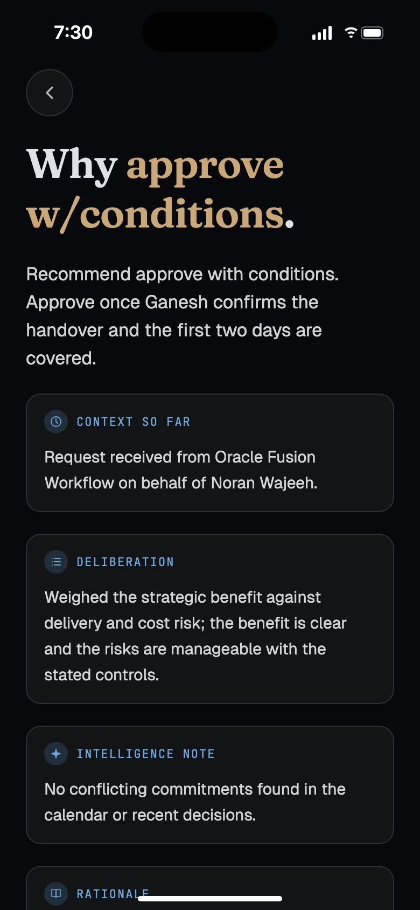
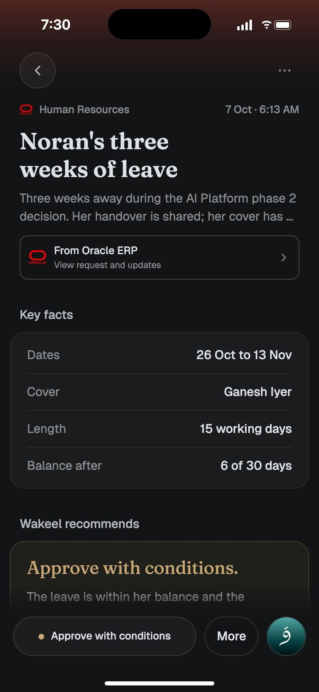
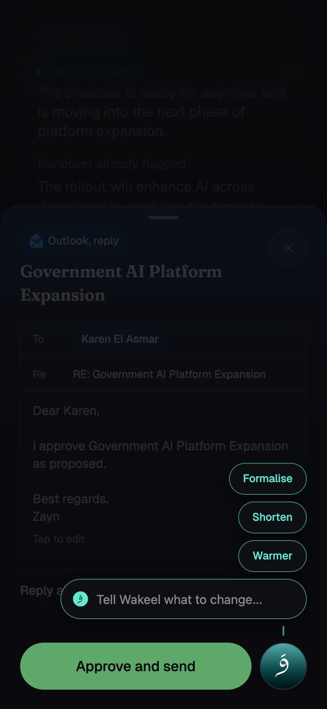
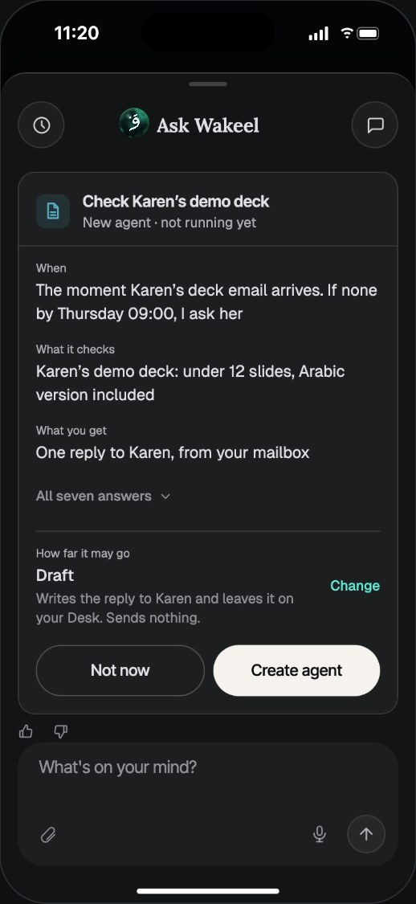

Case 012026아부다비 정부 DGE
Wakeel피드백을 말이 아니라, 고를 수 있는 화면으로
고위 의사결정자에게 오는 결재와 요청을 AI가 먼저 읽고 추천을 붙이는 모바일 앱입니다. 저는 경험 설계를 맡아 AI 에이전트 팀과 디자인 허브를 운영합니다. 의사결정자의 피드백은 실제 앱 코드 위의 선택지가 되고, 코멘트는 몇 분 뒤 고친 화면으로 돌아오며, 고른 것은 개발팀이 바로 옮길 문서가 됩니다.
- 역할
- 경험 설계 리드. UX, 프레즌스, 프로토타입, 개발 전달
- 기간
- 2026년 8월부터, 진행 중
- 연동
- Oracle ERP 결재, Outlook 결정 요청
- 일하는 방식
- 디자인 허브, 코드 위의 선택지, 코멘트로 고치기, 개발 핸드오프


프로젝트 소개
Wakeel은 아부다비 정부 DGE의 AI 의사결정 앱입니다. Oracle ERP의 결재와 Outlook으로 온 결정 요청을 한 책상에 모으고, 요청마다 근거를 읽어 추천과 확인 항목을 붙입니다. 밤사이 메일을 정리하고 답장 초안을 써 두는 에이전트이기도 합니다. 사용자는 고위 의사결정자이고, 일부 기능은 이미 쓰이고 있습니다.
이 케이스는 화면보다 일하는 방식에 관한 이야기입니다. 저는 AI 에이전트와 함께 Wakeel의 디자인 허브를 운영합니다. 제안, 리뷰 라운드, 프로토타입, 개발 핸드오프, 모든 변경의 기록이 한 주소에 있습니다. 에이전트는 실제 앱 코드 위에 선택지를 만들고 코멘트를 받아 고칩니다. 저는 무엇을 물을지, 무엇이 기준인지, 언제 끝난 것인지를 정합니다.
- 사용자
- 고위 의사결정자. 직접 고르고, 피드백도 직접 줍니다
- 리뷰 라운드
- 10월 12일 첫 리뷰 9개 과제, 13일 두 번째 리뷰 5개 과제, 27일 ERP 6개 과제
- 디자인 허브
- 제안, 리뷰, 프로토타입, 핸드오프, 변경 기록을 한 주소에. 5주 동안 기록 253건
- 프로토타입
- 운영 앱과 같은 코드, 플래그를 켤 때만 보임. 운영 앱은 그대로
- 화면
- 샘플 데이터로 돌린 프로토타입. 이름과 금액은 실제가 아님
- 해결하려 했던 사용자 문제
- 하루 휴가와 3년짜리 입찰이 같은 카드, 같은 버튼으로 옵니다. 그리고 밤새 일하는 AI에게는 지금 무엇을 하는지 보여 줄 얼굴이 없었습니다. 화면 구석의 납작한 원 하나였고, 결정 화면에서는 그마저 사라졌습니다.
- 왜 중요했나
- 고위 의사결정자의 시간은 조직에서 가장 비싸고, Oracle로 나간 결재는 되돌릴 수 없습니다. 사용자가 곧 리뷰어라서, 피드백이 화면이 되는 속도가 곧 제품에 대한 신뢰였습니다.
- 어떤 과정으로, 어떤 선택을 했나
- 리뷰를 과제로 나누고, 과제마다 에이전트가 실제 앱 코드 위에 선택지를 만듭니다. 코멘트는 몇 분 안에 고친 화면으로 돌아오고, 고른 것은 하나의 프로토타입, 버전, 개발 문서가 됩니다. Wakeel의 얼굴은 여섯 방향에서 하나로 좁혀 여덟 상태로 설계했습니다.
- 결과와 배운 것
- 첫 리뷰의 9개 과제를 모두 골라 개발 문서로 넘겼고, ERP 라운드에서는
ERP-2 I를 골랐습니다. 코멘트 82건이 모두 반영됐고, 반영까지 중간값은 10분입니다. 그동안 운영 앱은 바뀌지 않았습니다.
실제 앱 코드로 만든 선택지
중간값. 82건 모두 반영
모든 화면에서 같은 얼굴
책상에서 읽고, 고르고, 되돌릴 수 있게.
책상에는 Oracle ERP의 결재와 Outlook으로 온 결정 요청이 함께 쌓입니다. 카드마다 출처, 제목, 요약, 핵심 사실 하나가 있고, 버튼이 곧 Wakeel의 추천입니다. 모든 확인 항목이 깨끗하면 빠른 승인, 아니면 추천과 그 색이 붙어 먼저 답을 고르게 합니다. 카드를 누르면 그 자리에서 요청의 페이지가 자라나고, 길게 누르면 흐려진 책상 위로 페이지가 미리 떠오릅니다. 오른쪽 아래의 오브가 Wakeel의 얼굴입니다.







샘플 데이터로 돌린 프로토타입 화면입니다. 이름과 금액은 실제가 아닙니다.
무게가 다른 결재는 같은 모양이었고, 일하는 AI에게는 얼굴이 없었습니다.
고위 의사결정자의 하루에는 하루짜리 휴가부터 3년짜리 대형 입찰까지 결재가 섞여 들어옵니다. 같은 카드, 같은 버튼으로 오면 쉬운 것도 하나하나 열어 봐야 하고, 어려운 것은 인수인계 문서, 입찰 점수, 연도별 예산을 따로 찾아 맞춰 봐야 합니다.
AI가 추천을 붙이는 것만으로는 부족했습니다. 추천이 왜 나왔는지 보이지 않으면 믿고 누를 수 없고, 근거를 모든 요청에 똑같이 늘어놓으면 쉬운 결재까지 무거워집니다.
Wakeel은 이제 밤새 메일을 정리하고, 초안을 쓰고, 사용자의 답을 기다리는 에이전트입니다. 그런데 화면 속 Wakeel은 한쪽 구석의 납작한 청록 원이었고, 결정 화면에서는 사라졌습니다. 지금 듣고 있는지, 생각 중인지, 나를 기다리는지 알 길이 없었습니다.

가장 바쁜 사람이, 되돌릴 수 없는 결정을 내립니다.
가장 비싼 시간입니다
쉬운 결재 하나를 여는 몇 초가 하루에 수십 번 쌓입니다. 리뷰 한 번도 귀합니다. 그래서 피드백은 몇 주 뒤의 시안이 아니라, 그날 눌러 볼 수 있는 화면으로 돌아가야 합니다.
나간 결재는 돌아오지 않습니다
Oracle로 보낸 승인은 되돌릴 수 없습니다. 실수할 여지를 화면이 막아야 하고, 마지막 순간까지 되돌릴 길이 보여야 합니다.
보여야 AI를 믿습니다
추천이 맞더라도 무엇을 확인했고 무엇이 열려 있는지 보이지 않으면, 사람은 직접 다시 확인합니다. AI가 지금 무엇을 하고 있는지도 마찬가지입니다. 보이지 않으면 AI가 있어도 일이 줄지 않습니다.
의사결정자는 고르고, 에이전트는 만들고, 저는 기준을 지킵니다.
- 1
리뷰를 과제로
리뷰 메모를 하나씩 고를 수 있는 과제로 나누고, 사용자의 요구 순서로 묶습니다. 첫 리뷰의 9개 과제는 기다리는 것을 먼저 알려 달라, 빨리 읽히게 해 달라, 맞는 시스템에서 처리하게 해 달라, 끝까지 닫아 달라, 네 가지로 읽혔습니다.
- 2
오늘의 앱 옆에 선택지
과제마다 요청 원문, 오늘 앱이 어떻게 동작하는지, 에이전트가 실제 앱 코드 위에 만든 선택지를 장단점과 함께 놓습니다. 선택지는 모두 폰 화면에서 열리고, 오늘의 앱과 단계별로 나란히 비교됩니다.
- 3
고르고, 코멘트로 고치기
의사결정자는 눌러 보고 고릅니다. 고칠 곳은 스크린샷에 표시해 코멘트로 남기면, 에이전트가 작업 중으로 받고 무엇을 바꿨는지 적어 완료로 답합니다. 선택지에 없는 변경은 공유 프로토타입에 바로 요청합니다.
- 4
고른 것을 하나로
고른 선택지를 모두 켠 하나의 프로토타입에서, 잠금 화면부터 사용자처럼 따라가 봅니다. 선택이 바뀔 때마다 버전이 남고, 첫 리뷰는 8일 동안 23개 버전이 쌓였습니다.
- 5
개발팀이 바로 옮길 문서
과제마다 사용자가 보는 것, 만들 것, 필요한 데이터, 상태와 예외, 완료 기준을 적습니다. 티켓에 그대로 붙이고, 프로토타입 코드는 동작의 참고로 함께 넘깁니다.
- 6
끝났다고 말하기 전에 기록
모든 변경은 끝났다고 말하기 전에, 무엇을 왜 바꿨는지와 그 출처를 허브의 기록에 남깁니다. 5주 동안 253건이 쌓였고, 61건이 코멘트에서 시작됐습니다.
코멘트 한 줄이 고친 화면이 되기까지
아래 Oracle 결재 시트의 A3에 제가 남긴 코멘트입니다. 방향은 좋지만 위쪽 색이 제목 바로 아래에서 끊겨 우아하지 않으니 서서히 흐려지게 하고, 제목에 이미 Approve가 들어 있어 버튼과 겹치니 빼고, 필수가 아닌 결재 단계는 숨기되 여는 길은 남기라는 내용이었습니다.
에이전트는 4분 뒤 바꿀 세 가지를 되짚어 작업 중으로 받고, 14분 만에 완료로 답했습니다. 같은 시트를 쓰는 A와 A2까지 함께 정리했다고 적었습니다. 고친 화면은 같은 선택지 자리에 바로 올라가, 다시 눌러 보고 다음 코멘트를 남깁니다.
- 코멘트82건, 모두 반영
- 반영까지 중간값10분
- 15분 안에 반영76%
- 코멘트에서 시작한 변경기록 253건 중 61건

예: "Oracle 결재가 메일 답장처럼 보인다"
첫 리뷰의 한 줄이었습니다. 오늘의 앱은 Oracle 구매 요청을 승인할 때도 Outlook 답장과 같은 메일 작성기를 열었고, 확인 문구는




모든 안이 같은 앱 코드 위에서 돌아가고, 안마다 어느 코멘트에서 나왔는지가 적혀 있습니다.
고른 것은 하나의 프로토타입과 개발 문서로

개발 문서의 한 과제: 탭 아이콘의 숫자
- 사용자가 보는 것
- 목록을 열지 않아도 남은 결정과 오늘 남은 회의 수를 압니다. 책상과 회의 탭 아이콘, 홈 화면의 앱 아이콘에 같은 숫자가 있습니다.
- 만들 것
- 탭 바의 숫자, 앱 아이콘 배지, 앱이 닫혀 있을 때를 위한 푸시의 배지 값
- 데이터
- 기존 목록의 합계만. 이름과 제목은 담지 않습니다
- 상태와 예외
- 0이면 숨김, 99를 넘으면 99+, 불러오는 동안은 마지막 값, 아랍어에서는 좌우를 바꿈
- 완료 기준
- 하나를 승인하면 탭, 목록, 앱 아이콘의 숫자가 새로고침 없이 함께 줄어듭니다
ERP 라운드에서 고른 안 ERP-2 I: 책상에서 바로, 요청마다 제 깊이로
요청마다 제 깊이로
빠른 승인이 안전한 요청은 한 블록. 나머지는 추천과 확인 항목, Oracle로 갈 내용. 인수인계, 입찰, 여러 해의 비용, 승인 외의 답은 추론과 조건까지 펼칩니다.
읽기와 행동을 나눈 미리보기
길게 누르면 손가락을 떼기 전에 페이지가 떠오릅니다. 미리보기에는 버튼이 없어, 읽다가 실수로 결재하지 않습니다.
모든 행동은 5초 뒤에
버튼은 진행 중이라는 것만 보여 주고, 위 알림에 남은 초와 되돌리기를 둡니다. 여러 건은 하나의 알림으로 쌓입니다.
여러 건은 같은 답일 때만 한 번에
고른 것의 답이 모두 같으면 모두 승인. 섞이면 Wakeel’s Actions에서 묶음별로 보고 뺄 것을 뺍니다. 고를 수 없는 Outlook 요청은 흐려지고, 누르면 살짝 흔들립니다.
끝난 일은 상태로
카드의 버튼이
열려 있는 질문: 되돌리기 알림의 모양


11월 2일의 코멘트로
Wakeel에게 얼굴을 주었습니다. 모든 화면에 같은 얼굴 하나.
10월 12일의 요청은 이랬습니다. 청록 원을 살아 있는 입체로, 상태는 여러 개, 절제하되 디테일은 깊게, 350명의 UAE 고위 공직자를 위해, 애국심은 조금만. 그날 에이전트와 함께 여섯 방향을 브라우저에서 실시간으로 그려 같은 여덟 상태로 움직여 보고, 잉크와 캐릭터 사이의 여섯 변주로 좁힌 뒤, 유리 속 잉크인 Midad 하나로 정했습니다. 진주, 모래, 일곱 겹의 빛, 눈이 있는 동반자 같은 나머지 방향은 아이디어로 남겼습니다.
절제한 뒤에 디테일
Wakeel의 화면은 글이 많습니다. 오브는 시각적인 순간이 허락된 단 한 곳이라, 작고 조용하게 두고 가까이 볼수록 보이게 합니다.
언제나 같은 얼굴
오브 하나, 글자 하나. 탭 바부터 알림까지 어떤 크기에서도 같은 재질입니다.
글자 없이 읽히는 상태
듣기, 생각, 일하기, 나를 기다림이 58포인트에서 라벨 없이 서로 다르게 보여야 합니다.
장식이 아니라 뿌리
재질과 이름으로 UAE를 담습니다. 버튼에 국기는 올리지 않습니다.
350명을 위한 차분함
튀지 않고, 만화 같지 않게. 움직임은 느리고, 필요 없으면 멈추고, 동작 줄이기 설정에서는 멈춘 오브가 됩니다.
Midad, 여덟 상태


글자가 숫자와 아이콘이 될 때잉크가
허브에서 실시간으로 그린 오브를 캡처했습니다. 상태가 바뀌어도 크기는 그대로, 재질과 움직임만 바뀝니다.
앱 안에서: 결정 화면에서도 사라지지 않게



오브가 있어야 할 열 곳, 1순위부터
- 탭 바
- 지금은 움직임 없는 납작한 원. 대기에는 숨 쉬고, 나를 기다리면 데워지고, 에이전트가 일하면 빛이 돌고, 길게 누르면 듣습니다
- 결정과 회의 화면
- 지금은 오브가 사라지고 회색 입력창만 남음. 오브가 입력창 왼쪽 자리를 맡습니다
- Wakeel에게 묻기
- 지금은 생각 중을 반짝이와 점 세 개로 표시. 오브가 생각하고 말하고, 답마다 작은 오브가 붙습니다
- 2순위, 3순위
- 음성 입력, 브리프 첫머리, 추천 카드, 에이전트, 잠금 화면과 알림, 시작 화면, 오프라인
움직임은 숫자로 맞추고, AI가 만든 티는 지웁니다
여덟 단계의 소용돌이
잉크가 얼마나 접히는지, 결이 얼마나 굵은지, 얼마나 빨리 흐르는지를 세 숫자로 두고, 여덟 단계를 나란히 놓고 골랐습니다. 지금 프로토타입에 들어간 것은 조용한 단계입니다.
밝은 화면의 오브
어두운 화면을 위해 그린 오브는 밝은 화면에서 구멍처럼 보였습니다. 어두운 유리, 우유 유리, 맑은 유리, 깊은 청록 네 가지를 얻는 것과 잃는 것으로 비교했습니다.
셰이더 하나, 상태 여덟
앱에서는 셰이더 하나가 여덟 상태를 숫자 사이로 부드럽게 옮깁니다. 앱이 뒤로 가거나 동작 줄이기 설정이면 멈추고, 셰이더가 없는 곳에서는 멈춘 그림이 됩니다.
같은 날 앱 전체에서 AI가 만든 화면의 흔적을 찾았습니다. 문구 자체는 깨끗했지만 문장 부호와 장식이 티를 냈습니다. 메타 정보를 잇는 가운뎃점, 메시지 속 긴 줄표, 링크에 직접 친 화살표는 영어와 아랍어 모두 앱 코드에서 0개로 고쳤고, 메타 줄은 그 언어의 쉼표로 잇게 했습니다. 모든 추천에 붙은 반짝이 아이콘, 넓게 벌린 작은 대문자, 서체 다섯 개와 제각각인 글자 크기 206개는 고칠 순서를 정해 두었습니다.
의사결정자가 직접 고른 안이, 개발로 넘어갈 준비를 마쳤습니다.
지금까지 정해진 것
- 첫 리뷰9개 과제 모두 고름, 23개 버전
- Oracle 결재17개 안 끝에 A8
- ERP 라운드
ERP-1 E,ERP-2 I - 프레즌스Midad 하나, 여덟 상태
- AI가 만든 티가운뎃점, 긴 줄표, 화살표 0개
- 운영 앱바뀌지 않음, 모든 변경은 플래그 뒤
개발팀에 넘기는 것
- 과제마다보는 것, 만들 것, 데이터, 상태와 예외, 완료 기준
- 여러 건 처리 API먼저 접수하고, 결과는 푸시와 알림함으로
- 결정마다빠른 승인 가능 여부, 확인 항목, 깊이, Oracle 승인 순서
- 오브셰이더 하나와 여덟 상태, 새 의존성은 하나
- 프로토타입 코드동작의 참고. 운영 코드는 아님
- 열린 질문되돌리기 알림 A~D, 기본 D
에이전트와 함께, 의사결정자의 피드백을 빠르게 제품으로 옮기며 배운 다섯 가지
-
01
피드백은 말이 아니라, 실제 코드 위의 고를 수 있는 화면으로 받습니다
의사결정자의 피드백을 회의록으로 옮기지 않고, 운영 앱과 같은 코드 위에 선택지로 만들어 폰에서 직접 눌러 보게 했습니다. 세 번의 리뷰에서 94개를 만들었고, 고른 것이 그대로 다음 라운드의 기준이자 개발팀에 넘길 문서가 됐습니다. 그동안 운영 앱은 한 번도 바뀌지 않았습니다.
마키나락스에서라면고객 현장의 요구를 문서로만 주고받지 않고, Runway 코드 위에 플래그로 만든 선택지를 고객이 직접 눌러 보고 고르게 하겠습니다. 고른 것이 프로젝트 코드로 갈라지지 않고 바로 제품 후보가 됩니다.
-
02
코멘트가 몇 분 안에 화면으로 돌아오면, 리뷰가 대화가 됩니다
코멘트 82건이 모두 고친 화면으로 돌아왔고, 절반은 10분 안이었습니다. 빨리 돌아오니 아닌 안도 만들어 볼 수 있었습니다. 버튼을 Oracle 색으로 칠한 A2가 승인의 초록을 잃는다는 것은, 말로 논의할 때가 아니라 눌러 본 뒤에 모두가 알았습니다.
마키나락스에서라면고객과 SA가 남긴 코멘트는 고친 화면으로 빠르게 돌려, 요구사항 정리가 몇 주의 문서가 아니라 며칠의 대화가 되게 하겠습니다.
-
03
AI의 얼굴은 장식이 아니라 상태입니다
오브가 아름다운 것보다, 지금 듣는지, 생각하는지, 나를 기다리는지가 글자 없이 읽히는 것이 중요했습니다. 크기는 그대로 두고 재질과 움직임만 바꿨고, 한 화면에는 오브 하나만 둡니다. 가장 바쁜 사용자에게 AI는 조용하고 분명해야 합니다.
마키나락스에서라면에이전트가 설비와 데이터를 다룰 때, 지금 분석 중인지, 실행 중인지, 승인을 기다리는지를 운영자가 라벨 없이 알아보는 하나의 상태 언어로 플랫폼 전체에 두겠습니다.
-
04
되돌릴 수 없는 일에는 되돌릴 시간을, 추천에는 일의 무게만큼의 깊이를
Oracle로 나간 결재는 되돌릴 수 없어, 모든 행동을 5초 기다리게 하고 되돌리기를 위 알림에 두었습니다. 하루 휴가는 한 블록으로, 3년짜리 입찰은 추론, 조건, 연도별 비용까지 펼쳐, 추천의 깊이를 일의 무게에 맞췄습니다.
마키나락스에서라면설비와 데이터에 영향을 주는 AI 행동에는 실행 전 확인, 되돌릴 시간, 감사 로그를 플랫폼 규칙으로 두고, 추천은 작업의 위험도에 맞춰 깊이를 정하겠습니다.
-
05
에이전트에게는 결정이 아니라 선택지를 맡기고, 모든 일은 기록부터 합니다
에이전트는 선택지를 빠르게, 여러 개 만듭니다. 고르는 것은 의사결정자이고, 저는 무엇을 물을지, 고른 것이 지켜야 할 기준, 끝났다고 말할 조건을 정합니다. 모든 변경이 이유와 출처와 함께 기록에 남기 때문에, 라운드가 빨라져도 방향이 흔들리지 않습니다.
마키나락스에서라면PdM, UX, 테크니컬 라이팅이 AI 에이전트와 함께 선택지를 빠르게 만들고, 사람은 고르는 기준을 세우며, 모든 변경을 이유와 출처와 함께 남기는 조직을 만들겠습니다.